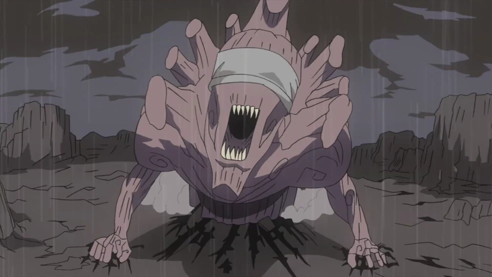
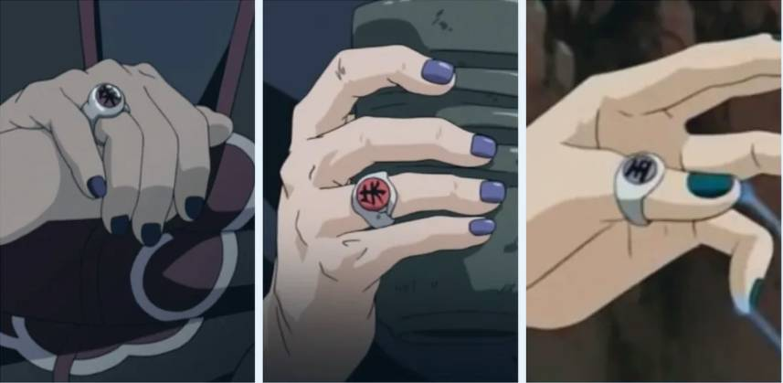
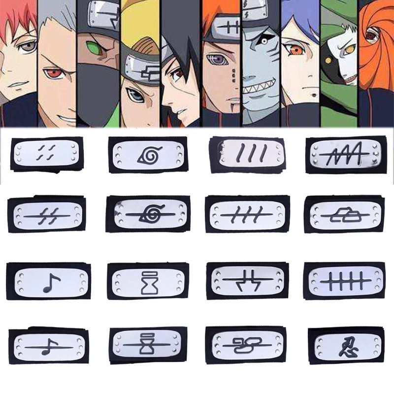

Recursos da Akatsuki
Estatua de Gedo
Ao término de sua batalha com a Dez-Caudas, os irmãos Hagoromo e Hamura Ōtsutsuki usaram os Seis Caminhos — Chibaku Tensei para transformar a besta no núcleo da lua recém-formada, enquanto também extraíam o chakra da besta e o selavam em Hagoromo. Hamura então assumiu a liderança do clã Ōtsutsuki e migrou para a lua a fim de proteger o corpo da Dez-Caudas. Um milênio depois, Madara Uchiha despertou o Rinnegan, o que lhe permitiu quebrar o selo e invocar o corpo da lua.

Aneis
Os anéis da Akatsuki em Naruto servem como ferramentas rituais essenciais e símbolos de hierarquia. Eles aceleram a extração das Bestas com Caudas (Bijuus) para a Estátua Demoníaca, permitem a comunicação e projeção astral à distância, e simbolizam a lealdade de cada membro à organização. Cada um dos dez anéis possui um kanji (ideograma japonês) específico e uma cor única que representam o papel e a essência do ninja: Pain (Dedo polegar direito): Kanji 零 (Zero). Cor: Roxo/Cinza. Representa a sua posição de líder e o conceito de "vazio" ou "nada". Deidara (Dedo indicador direito): Kanji 青 (Azul/Verde). Cor: Azul-petróleo. Representa o dragão azul e o elemento madeira na mitologia chinesa. Konan (Dedo médio direito): Kanji 白 (Branco). Cor: Branco. Representa o dragão branco e a virtude. Itachi Uchiha (Dedo anelar direito): Kanji 朱 (Vermelho). Cor: Vermelho-sangue. Representa o pássaro vermelho do sul. Orochimaru (Dedo mínimo direito): Kanji 空 (Céu/Vazio). Cor: Amarelo. Representa o vazio, o céu e a transcendência humana que ele buscava. Sasori e Tobi (Dedo mínimo esquerdo): Kanji 玉 (Jóia/Esfera). Cor: Roxo. Representa a virtude, o imperador e a alma. Kakuzu (Dedo anelar esquerdo): Kanji 北 (Norte/Tartaruga). Cor: Verde-escuro. Representa a estrela do norte e a lealdade. Hidan (Dedo médio esquerdo): Kanji 三 (Três). Cor: Laranja. Representa o espírito do sul ou o sol. Kisame Hoshigaki (Dedo indicador esquerdo): Kanji 南 (Sul). Cor: Amarelo-claro. Representa o sul e o peixe. Zetsu (Dedo polegar esquerdo): Kanji 玄 (Sinal místico/Preto). Cor: Verde-claro. Representa o céu, a escuridão e o outono.

Bandanas
As bandanas da Akatsuki (também chamadas de hitai-ate) têm um significado simples, mas muito profundo na lore de Naruto: elas representam a ruptura de seus membros com seus laços originais.Aqui está o significado detalhado:O Risco (Símbolo de Renegado): O risco horizontal cravado bem no meio do símbolo da aldeia natal indica que o ninja abandonou ou desertou de sua vila. Na hierarquia ninja, eles são chamados de nukenin (ninjas renegados).Afiliação à Akatsuki: Ao cruzar o símbolo, os membros deixam claro que não servem a nenhuma nação específica, mas sim aos ideais e objetivos da organização.A Relação com o Passado: Existe um consenso na comunidade de fãs de que, mesmo com o risco, o uso da bandana serve como um lembrete da origem de cada um e de seu passado.Contexto da Organização:O nome "Akatsuki" significa literalmente "Amanhecer". O manto preto com nuvens vermelhas utilizado pelos ninjas, que complementa a bandana, simboliza o "derramamento de sangue" que ocorreu no País da Chuva durante as guerras, representando também as tragédias que moldaram o objetivo original do grupo.
